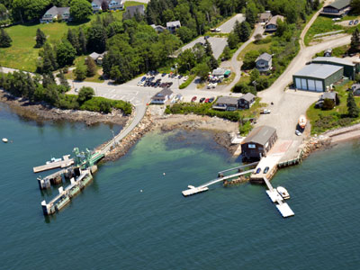
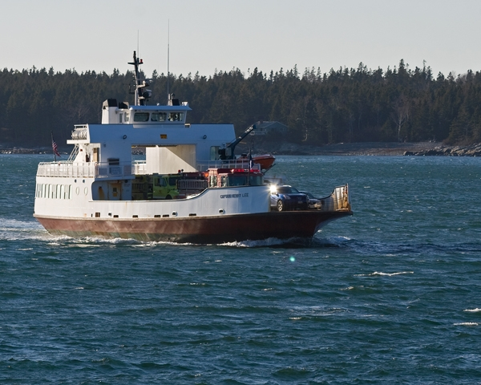

Traveling to Swan's Island
Swan’s Island is, well, an island...and a class of Maine island known as “non-bridged” islands. So you can’t just drive there directly. In fact, you will find that there is at least six miles of sea water between the closest point you can drive to (Bass Harbor) and Swan’s Island. Luckily there are ways to get across this moat. There is a ferry service that is operated by the state of Maine. It runs six times a day in the summer out of Bass Harbor. This is by far the most practical way to travel out.
{kind=link}
There are also “water taxi” services out of Northeast and Southwest Harbor but they are untried by any visitors to date. Alternatively, a call to us at the Cloud House can almost certainly rustle up a ride on our boat, Bongo Fury, if we are around.
Practically speaking, the most flexible jumping off point is Bass Harbor. From there you can drive on to the ferry (pending availability of a spot, or you holding a reservation). You can walk on the ferry with no reservation (and leave your car in a lot for ferry customers) as well. Walking on, and leaving your car at the Bass Harbor terminal, is a great choice if you want the option to run back to MDI during the days on the ferry and hike Acadia or hang out in Bar Harbor or other towns on MDI. You won't find you need a car on the island as you can use a myriad of transportation options we have at the house including a Highlander SUV, a Ducati Multistrada(for motorcycle riders), a Vespa Elettrica scooter as well as a bicycle or two. Walking to virtually any destination on the island is possible, but not necessarily practical.
{kind=link}
Here is more detail on the potential ports to depart from though:
- Bass Harbor- Preferred jumping off point due to being closest port to Swan’s Island, having a ferry service to the island and parking for passengers. The downside is this is almost certainly the longest drive, but only by a little bit, taking you to the southern end of MDI.
- Southwest Harbor-This is around the corner from Bass Harbor. For a pickup with our boat this can be a good location. You can get picked up at Dysarts Great Harbor Marina, where we have a slip for the season. Another possible pickup location is Beals, after a delicious lobster meal.
- Northeast Harbor - Across the sound from Southwest Harbor this port also offers a pickup point on the town dock. Both ports allegedly offer some level of water taxi service but they are limited, relatively expensive, and possibly non-existent.
- Bar Harbor - If you are headed in this general direction it may be to Bar Harbor, the most recognized locale in the Mount Desert Island/Acadia area. If you find yourself in Bar Harbor, and fancy an impromptu visit to Swan’s Island, give us a call and we can almost certainly swing over on the boat and pick you up.
The Ferry
The Swan's Island ferry departs from Bass Harbor several times a day. See the Maine State Ferry Service for details and current information. If you are making definitive plans to come out to Swan's Island, and bring your car on the ferry, it is highly recommended you make reservations. In particular, if you are planning on a trip later in the day, reservations are important as the last ferry trip of the day is around 5PM and you may not have a next ferry to catch that day.
{kind=link}